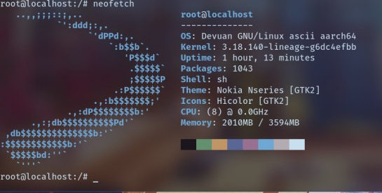

Chroot Linux(devuan) on Android (for ARM64 devices)
Tested on:
- YU Yureka Black (with android 11 custom rom and GSI )
Requirements.
- Rooted Android device.
- Busybox installed. I recommend “Busybox“ app by Stephen (Stericson).
- A terminal for Android. For example “Termux“ app or “Terminal Emulator for Android” app or Default local terminal by lineage. [or ADB shell with root access]
- “XSDL XServer“ app.
- ARM64 Maemo Leste image(based on debian). This tutorial use maemo-leste-1.0-arm64-raspi3-20200114.tar.gz, the latest image downloaded from https://maedevu.maemo.org/images/arm64-generic/
Steps to install.
1. Extracting the image.
- Open a terminal for Android.
sucd /sdcardwget https://maedevu.maemo.org/images/arm64-generic/20200114/maemo-leste-1.0-arm64-raspi3-20200114.tar.gzmkdir /data/local/lestebusybox tar xvzf /sdcard/maemo-leste-1.0-arm64-raspi3-20200114.tar.gz -C /data/local/lestecd /data/local/leste- If you want to mount the internal memory of Android (warning: it is not recommended because linux writes logs in storage so it kills R/W cycle), you can: mkdir sdcard
2. Chrooting Devuan.
wget https://raw.githubusercontent.com/AKhilRaghav0/debain_on_android/origin/chroot.shsh chroot.sh3. Configuring usable Internet.
echo nameserver 8.8.8.8 > /etc/resolv.confecho 127.0.0.1 localhost > /etc/hostsecho aid_inet:x:3003:user,root,_apt >> /etc/groupecho aid_net_raw:x:3004:user,root,_apt >> /etc/groupecho aid_admin:x:3005:user,root,_apt >> /etc/groupusermod -g 3003 _aptexitsh chroot.sh4. Upgrading Maemo Leste Ascii to Maemo Leste Bewoulf.
apt updateapt upgraderm -R /etc/apt/sources.list.decho deb http://pkgmaster.devuan.org/merged beowulf main contrib non-free > /etc/apt/sources.listecho deb http://pkgmaster.devuan.org/merged beowulf-updates main contrib non-free >> /etc/apt/sources.listecho deb http://pkgmaster.devuan.org/merged beowulf-security main contrib non-free >> /etc/apt/sources.listecho deb http://maedevu.maemo.org/leste beowulf main contrib non-free >> /etc/apt/sources.listapt updateapt upgrade- We got an error: “unmet dependencies” related with “theme-default-settings-mr0”. To solve:
dpkg -r --force-depends theme-default-settings-mr0
apt upgradeapt --fix-broken install- Ignore error about processing “openrc”.
apt updateapt upgrade
- Choose your keyboard layout. Choose “yes” when you are asked about restarting services.
- You will get error about: exim4-config, exim4-base,exim4-daemon-light. To solve:
apt purge exim4-config exim4-base exim4-daemon-light
- It is possible Internet not working after upgrading. To solve, again:
echo nameserver 8.8.8.8 > /etc/resolv.conf
rm -R /etc/apt/sources.list.dapt updateapt dist-upgrade- Choose “Y” when you are asked.
apt updateapt upgrade- No more errors should be displayed. We ensure that some necessary applications are installed:
apt install clock-ui alarmd applet-datetime hildon-base5. Launching Devuan GUI: Hildon.
wget https://raw.githubusercontent.com/AKhilRaghav0/debain_on_android/origin/launch_gui.sh /- Open “XSDL XServer” Android app in landscape mode or portrait mode.
sh /launch_gui.sh- Devuan is started. Now you can open and install apps using osso-xterm. Audio should work too. You can install chromium or firefox-esr, browse to youtube and check if audio works.
6. Enabling Hildon application manager: installing “dummy network”
- From osso-xterm:
apt install libicd-network-dummygconftool-2 -s -t string /system/osso/connectivity/IAP/DUMMY/type DUMMYgconftool-2 -s -t string /system/osso/connectivity/IAP/DUMMY/name 'Dummy network'gconftool-2 -s -t boolean /system/osso/connectivity/IAP/DUMMY/autoconnect true/etc/init.d/icd2 start -D
- Restart Devuan (repeat this steps every time you can restart Maemo Leste).
- Close “XSDL XServer” app.
- From terminal of Android: exit sh chroot.sh
- Open “XSDL XServer” app.
- From terminal of Android: sh /launch.sh
- Go to settings > internet connections > connections. Check “Dummy network” is there.
- Select the “Dummy network” connection. Go to time (top left of the screen) > Internet connection > Dummy network. 5- Now you can install apps using Hildon Application Manager.
Extra notes.
- It is possible there is errors about needed publick keys. In that case we’ll get all public keys (.asc files) from https://maedevu.maemo.org:
wget -O - https://maedevu.maemo.org/testing-key.asc | apt-key add -wget -O - https://maedevu.maemo.org/testing-key-exp.asc | apt-key add -wget -O - https://maedevu.maemo.org/extras-key.asc | apt-key add -
- “Apt update” may freeze during installing “gconf2”. The reason is that XSDL Xserver is open. You must close the application and the update will continue.
- Increase DPI in apps:
echo export GDK_DPI_SCALE=20 >> /root/.bashrcecho export QT_SCALE_FACTOR=22.5 >> /root/.bashrc
- Add path to installed games:
echo export PATH=/usr/games:$PATH >> /root/.bashrc